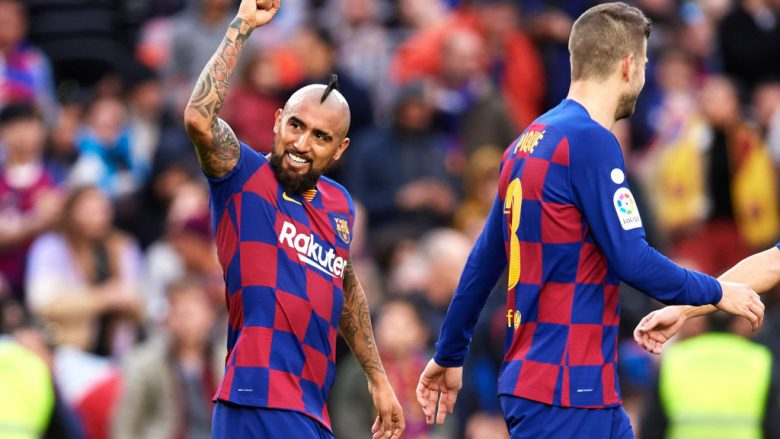

Mesfushori i Milanit, Franck Kessie mund të
largohet për në Ligën Premier nëse klubet
angleze paguajnë 20 milionë euro për shërbimet e tij.
Real Betisi ka njoftuar se arritur ta huazojë Carles Alenan nga Barcelona.
Skuadra spanjolle i mori shërbimet e mesfushorit deri në fund të këtij sezoni
nga rivali i La Liga-së.
Kurzawa pritet ti bashkohet Interit në afatin e janarit, transferimi
i Kurzawas në Serie A pritet t’i kushtojë Interit jo më shumë se
3 milionë euro.

Roma shpejton për transferimin e Smalling,
qendërmbrojtë si po kërkohet nga shumë skuadra angleze.
Klubi i madh spanjoll, Real Madridi mendohet se po përgatit
një ofertë gjatë verës prej 70 milion eurosh për mesfushorin
e Napolit, Fabian Ruiz.
Klube të shumta nëpër Evropë janë vendosur të
luftojnë për nënshkrimin e mesfushorit të Tottenham Hotspur
Christian Eriksen, ndërsa së fundmi garës i janë bashkuar
edhe Interi dhe Juventusi.
Chelsea po e kërkon me ngulm transferimin e Jadon Sanchos nga Borussia Dortmundi.
Daily Mail raporton se skuadra gjermane u ka bërë me dije bluve se
për ta transferuar Sanchon, duhet të paguajnë 120 milionë euro.

Vidal duket se nuk do të largohet nga Barcelona. Mundo Deportivo ka
shkruar se tekniku i Barcelonës, Valverde i ka kumtuar Vidalit se nuk do ta
lejoj largimin e tij, për shkak të paraqitjeve tejet të mira në
ndeshjet e fundit.